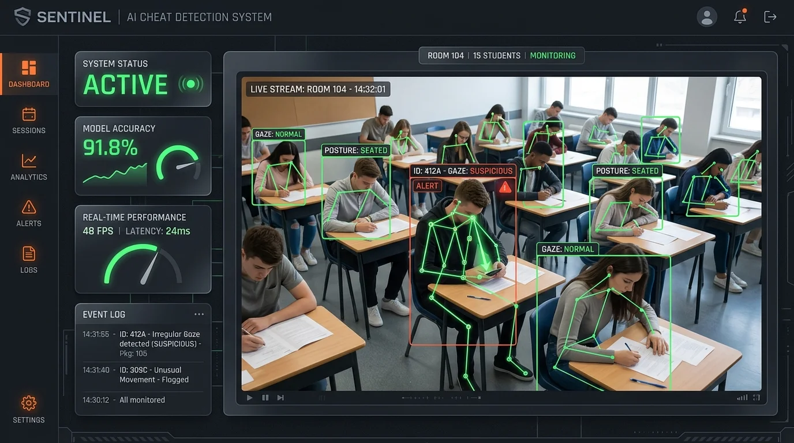

INFRASTRUCTURE PIPELINE (HOVER TO ACTIVATE)
RTSP Stream
Raw 1080p continuous video frames captured at 30 FPS
➔
OpenCV Process
Frame pre-processing, resizing, and normalizing for PyTorch inputs
➔
YOLO/PyTorch
Deep learning inference detecting student gaze vectors & body poses
➔
Inference Node
Detects suspicious behavior anomalies with 90%+ accuracy
PROJECT_01 // CV_DECK
AI-Based Cheat Detection System
Python
OpenCV
PyTorch
Streamlit
THE BOTTLENECK
Online invigilation requires extensive manual proctoring overhead, frequently missing micro-gestures and leading to high human error rates.
THE INTERVENTION
Built a real-time behavioral monitoring system processing RTSP video streams on standard client edge GPUs, avoiding heavy server hosting latency.
90.2%
Evaluation Precision
< 45ms
Inference Latency